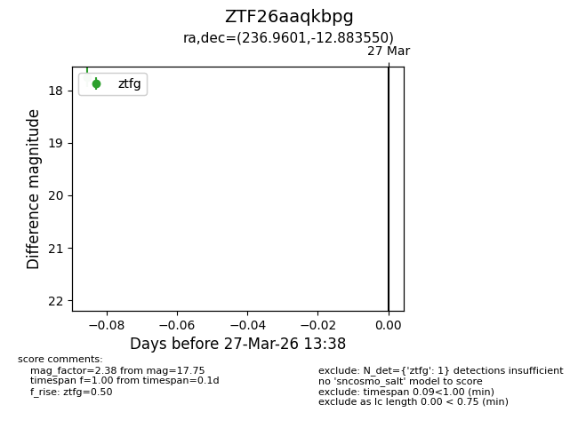
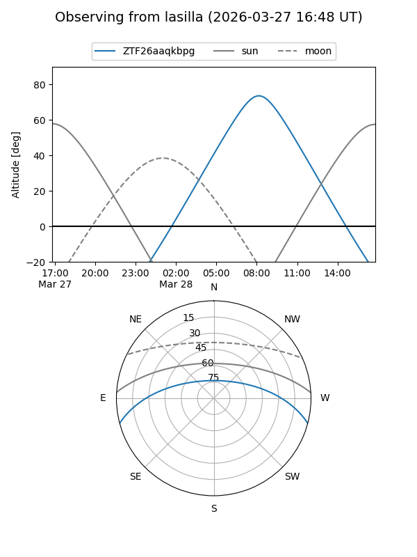
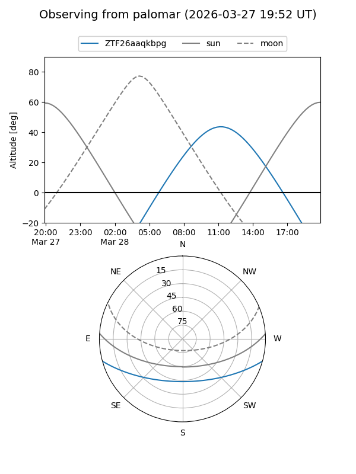

ZTF26aaqkbpg
Target ZTF26aaqkbpg at 2026-03-27 13:40
Aliases and brokers:
FINK: link
Lasair: link
ALeRCE: link
alt names
ZTF26aaqkbpg (ztf,fink_ztf)
Coordinates:
equatorial (ra, dec) = 236.9601,-12.88355
equatorial (HMS+DMS) = 15:47:50.41,-12:53:00.78
galactic (l, b) = (355.5868,+31.42333)
Flags:
Photometry:
last ztfg=17.75
1 ztfg detections
Lightcurve

Visibility


Additional plots